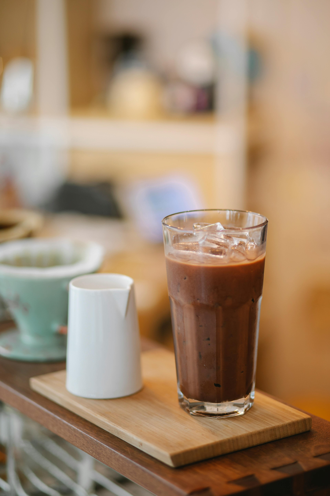

|  |
F A V O R I T
Susu CoklatSusu coklat adalah minuman yang tidak hanya lezat, tetapi juga memiliki sejumlah manfaat kesehatan yang luar biasa. Sebagai seorang pecinta susu coklat yang setia, saya telah belajar banyak tentang kandungan gizi dan dampak positif yang dimilikinya bagi tubuh. Inilah mengapa saya yakin bahwa susu coklat adalah yang terbaik di antara minuman lainnya. Pertama-tama, susu coklat kaya akan nutrisi penting seperti kalsium, protein, dan vitamin. Kalsium sangat penting untuk kesehatan tulang dan gigi yang kuat, sementara protein membantu dalam pembentukan otot dan pemulihan sel. Vitamin-vitamin seperti vitamin D dan vitamin B12 yang terkandung dalam susu coklat juga mendukung fungsi sistem kekebalan tubuh dan metabolisme yang sehat. Selain nutrisi yang melimpah, susu coklat juga mengandung kakao yang merupakan sumber antioksidan kuat. Antioksidan membantu melawan radikal bebas dalam tubuh, yang dapat menyebabkan kerusakan sel dan berbagai penyakit kronis. Dengan mengonsumsi susu coklat secara teratur, kita dapat meningkatkan perlindungan tubuh kita dan mengurangi risiko penyakit seperti penyakit jantung dan kanker. Namun, manfaat susu coklat tidak hanya terbatas pada aspek kesehatan fisik. Rasa lezat dan kenikmatan yang diberikannya juga dapat meningkatkan suasana hati dan memperbaiki mood. Setelah minum segelas susu coklat hangat, saya sering merasa lebih rileks dan bahagia, sehingga membantu mengurangi stres dan kecemasan. Selain itu, susu coklat juga menjadi pilihan yang ideal untuk anak-anak yang sulit minum susu. Rasa manis dan coklat yang nikmat membuat susu coklat menjadi lebih menarik bagi mereka, sehingga memudahkan orang tua untuk memastikan anak-anak mendapatkan nutrisi yang cukup untuk pertumbuhan dan perkembangan mereka. Dengan semua manfaat yang ditawarkannya, saya yakin bahwa susu coklat adalah yang terbaik di antara minuman lainnya. Ini bukan hanya minuman yang menyegarkan dan lezat, tetapi juga merupakan sumber nutrisi yang penting bagi kesehatan dan kesejahteraan kita. Oleh karena itu, saya akan terus memilih susu coklat sebagai minuman favorit saya, dan saya mengajak orang lain untuk melakukannya juga untuk mendapatkan manfaat yang luar biasa ini. Namun, mengonsumsi susu cokelat secara berlebihan juga tidak terlalu bagus bagi kesehatan kita sehingga perlu bagi kita untuk minum susu coklat secukupnya sehingga dapat terhindar dari resiko penyakit seperti diabetes akibat mengkonsumsi sesuatu yang manis secara berlebihan Kembali |